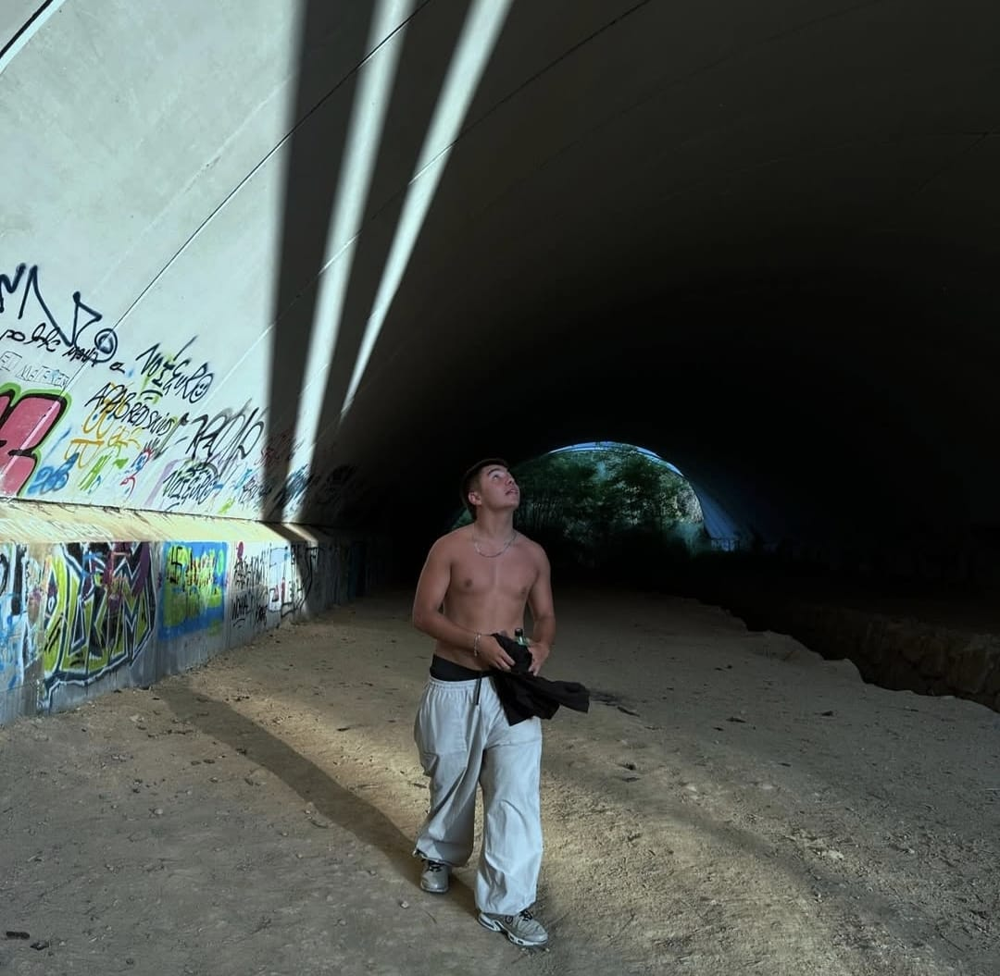
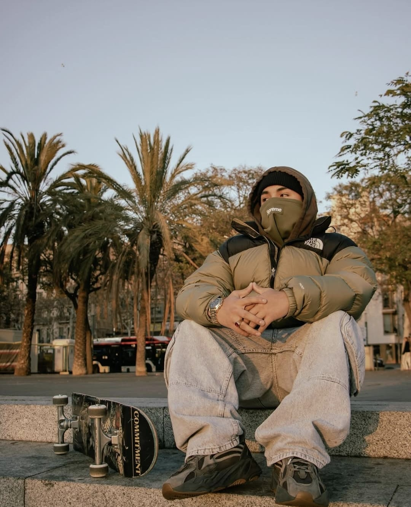
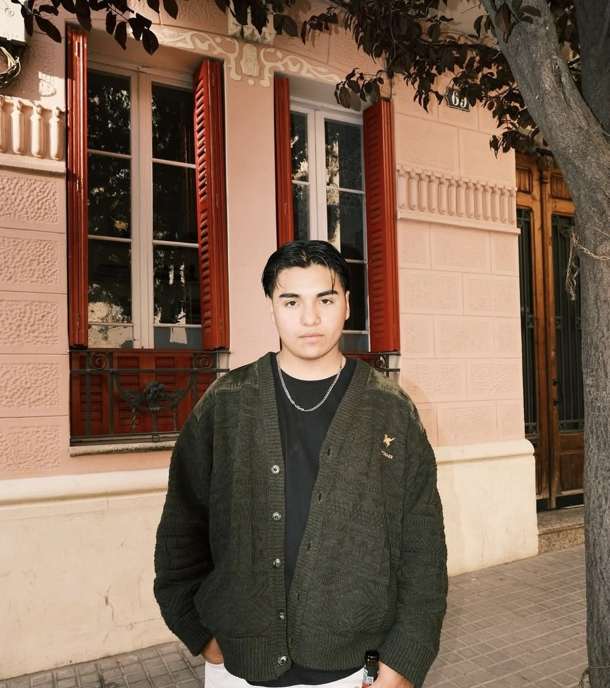

Proyectos en los que he colaborado


Sobre Mí

Nacido para crear, impulsado por el hambre de mas
Desde niño senti dentro el hambre de crear, de no conformarme con lo que el mundo me daba, mientras otros soñaban con juegos o fantasias, yo buscaba caminos para construir, para transformar lo poco en mucho porque entendi que el dinero no es solo riqueza: es libertad, es herramienta, es la forma de escribir mi propio destino. asi entre caidas, ventas, proyectos, fui descurbiendo que los negocios no son solo cifras: son mi manera de mirar la vida, con vision, con fuego, con ganas de siempre ir por mas
Hablemos
¿Tienes un proyecto en mente o te sientes estancado pero tienes hambre de mas? Charlemos!